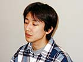
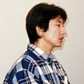
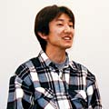

| ■今回のゼルダは、最初にカプコンで作り始めたそうですね。 |
| 藤林 ええ。最初はウチの岡本（岡本吉起常務）から宮本茂さんに「ゼルダをカプコンで作ってみたい」という提案をしていたらしいんです。それが２年くらい前ですね。そのあと、手の空いている人間がファミコンのディスクシステムの『ゼルダの伝説』をもとに、２Ｄのゲームを作り始めたんです。コンセプトとしては、いまの子どもたちにファミコン時代のゼルダのよさを伝えたい、と。 |
| - - - - - - - - - - - - - - - - - - - - - - - - - - - - - - - - - - - - - - - - - - - - - - - |
| ■藤林さんもゼルダファンだったんですか。 |
| 藤林 ええ、ファミコンのディスクシステムのときは、一番におもちゃ屋さんに買いに行きました。お年玉を握り締めて買いに走った覚えがあります。 |
| - - - - - - - - - - - - - - - - - - - - - - - - - - - - - - - - - - - - - - - - - - - - - - - |
| ■藤林さんは最初からプロジェクトに参加していたんですか。 |
| 藤林 最初は全体の意見をまとめる書記みたいな形で参加していたんですよ。そのころはコンセプトだけを告げられていたんですが、だんだんゲーム制作自体に関わるようになってきました。まずは宮本さんのほうにプレゼンテーションをしようということで、岡本のコンセプトをもとに、僕が企画書を書いたんです。 |
| - - - - - - - - - - - - - - - - - - - - - - - - - - - - - - - - - - - - - - - - - - - - - - - |
| ■企画書の時点でゲームの内容は決まっていたんですか。 |
| 藤林 ほぼいまのゲームの柱になる部分は決まっていました。つまり、カラーゲームボーイで出すこと、四季を使うこと、２Ｄのゼルダの味を残したものであることなどですね。連作で出すというのも決まっていましたので、それを活かすアイデアとして、リンクシステムというものを僕が考えました。たとえば１本目のゲームで悪者を見逃したら、もう１本でその悪者が出てくるような、そんなソフトにしたいと思っていたんです。ゼルダは世界観のしっかりしたゲームですから、64のシリーズで表現しているようなキャラクターの“生きてる感”を、ゲームボーイでもじゅうぶんに出せると思ったんです。 |
| - - - - - - - - - - - - - - - - - - - - - - - - - - - - - - - - - - - - - - - - - - - - - - - |
| ■宮本さんの反応はどうでしたか。 |
| 藤林 宮本さんにお会いするのは初めてだったんですね。岡本と一緒にプレゼンテーションに行ったんですが、岡本と直接仕事をするのも初めてで、しかも他社の著名なかたに会いにいくというので、ドキドキしてしまいました。企画書を説明している間、宮本さんは終始黙っていらしたので、緊張していたんです。でも、読み終わったとき、「いろいろ穴があるだろうから突っ込んでやろうと思っていたんだけど、できてるみたいだね」と言われて。「いいと思う」と気に入っていただけたんです。 |
| - - - - - - - - - - - - - - - - - - - - - - - - - - - - - - - - - - - - - - - - - - - - - - - |
| ■そのあとはカプコンでの作業ですか。 |
| 藤林 そうですね。あとは岡本のほうに状況を報告しながら、シナリオを進めていきました。役割としてはディレクター兼プランナーです。 |
| - - - - - - - - - - - - - - - - - - - - - - - - - - - - - - - - - - - - - - - - - - - - - - - |
| ■カプコンのゲームは、シナリオを最初に作ると聞きました。 |
| 藤林 ええ。でもゼルダシリーズでシナリオが出てきたのは、ハードのスペックが上がってからだと思います。もともと初期のゼルダは、純粋なアクションＲＰＧで、お話はあまりなかったですよね。今回は、その２つを融合させられたらなあと思っていました。ただ、最初はいまのボリュームの10分の１の作品を作るはずだったんですよ。でも、作っていくうちにだんだん大きくなっていって、次第に独自の作品になっていったんです。 |
| - - - - - - - - - - - - - - - - - - - - - - - - - - - - - - - - - - - - - - - - - - - - - - - |
| ■『大地の章』『時空の章』は別々のチームで作ったんですか。 |
| 藤林 いえ、同じチームで順番に作っていきました。最初は僕が一人でシナリオチームとやりとりをしていたんです。それで、シナリオを作っている間に、カプコンの中で「いいなあ」と思うグラフィッカーやプログラマに密かに声をかけておいたんです。そういった人事は本当は直属の上司である船水（船水紀孝プロデューサー）が決めていたんですが、僕がまず打診しておいたほうがいいと思いまして。船水には「それはオレの仕事だから」と怒られましたが、そのまま希望のスタッフを入れてもらえたんです。 |
| - - - - - - - - - - - - - - - - - - - - - - - - - - - - - - - - - - - - - - - - - - - - - - - |
| ■そのあとは、実際にゲームを作る作業だと思うのですが、簡単に手順を教えてください。 |
| 藤林 最初は、だいたいのイメージから入りますね。どんな地形かを考えてから、マップを作りはじめます。ざっくり作ってから、次にキャラクターを考えました。ゲームを作りながらシナリオも修正していきます。 |
| - - - - - - - - - - - - - - - - - - - - - - - - - - - - - - - - - - - - - - - - - - - - - - - |
| ■フィールド全体を書き直すこともあるんですか。 |
| 藤林 それは毎日ですね。実際に動かしてみて、「違うな」と思うときはやっぱり直します。全体の60％くらいできたところで、任天堂の山田さんがスーパーバイザーとして参加されたんです。そのころから、宮本さんのお話を聞くチャンスができたんですね。そこで宮本さんが持っているゼルダ観のようなものを吸収していきました。 |
| - - - - - - - - - - - - - - - - - - - - - - - - - - - - - - - - - - - - - - - - - - - - - - - |
| ■任天堂との共同開発ということで、おもしろいエピソードなどはありますか。 |
| 藤林 任天堂のゲームをプレイしていて、どのゲームにも共通した匂いがあると思っていたんです。宮本さんにお会いしたときに、やはり宮本さんの考えるゲームにおいての筋の通し方があるんだということがはっきりわかりました。それを得たことは、うちのチームにとって、すごく勉強になりましたね。あとは僕たちが何気なく置いたキャラクターに対して、山田さんたちから「このキャラクターの名前はなんですか」という質問が来るんですよ。確かに、名前をつけることでキャラクターが生き生きしてくるし、スタッフの思い入れが違ってきます。「名前をつけるといいよ」という簡単なようで、大事なことにハッとさせられました。それはほんの一例ですけど、任天堂の「あたたかいゲーム作り」のノウハウを教えられたような気がします。一番嬉しかったのは、山田さんにしても宮本さんにしても、まるで僕が任天堂の社員であるかのように接してくれたことです。任天堂とかカプコンというよりは、一緒にゲームを作っていくスタッフとして話をしてくれた。最終的には、そういった人柄みたいなものが、ゼルダに反映されていると思います。 |
| - - - - - - - - - - - - - - - - - - - - - - - - - - - - - - - - - - - - - - - - - - - - - - - |
| ■それと同時に、今回はカプコンらしさも入ったゲームだと思いますが。 |
| 藤林 カプコンらしさというよりは、カプコンのゼルダチームの個性ですね。ちょっと濃いキャラクターで世界観のおもしろみを出すようにしました。京都と大阪の違いといいますか、少しアウトローなキャラクターが出てくるところはカプコン的かもしれません。ただ、ゲーム上でのシステムの違いはないと思います。 |
| - - - - - - - - - - - - - - - - - - - - - - - - - - - - - - - - - - - - - - - - - - - - - - - |
| ■ここだけの裏話があったら教えてください。 |
| 藤林 『時空の章』では「暗黒の塔」という塔があって、そこで働かされている人たちがいるんですが、「担当が終わらない」「家に帰れない」というセリフがあるんです。うちのチームにもなかなか家に帰れない人がいたので（笑）、パロディで入れてみました。でも、うちはめちゃくちゃアットホームなチームなんで、ノリはよかったです。伝言を伝えに来た人が、そのまま打ち合わせに巻きこまれて２時間くらいしゃべっていったり。 |
| - - - - - - - - - - - - - - - - - - - - - - - - - - - - - - - - - - - - - - - - - - - - - - - |
| ■そういうアットホームな雰囲気がゲームにもにじみ出ているかもしれませんね。では、藤林さんから見ての、『ふしぎの木の実』の見どころをお願いします。 |
| 藤林 今回のゼルダは、チーム全体の個性で作り上げたものです。見どころとしては、イベントやミニゲームがたくさんあるのと、ダンジョンの仕掛けですね。ゲームボーイでできる大仕掛けをいろいろと考えてみました。スタッフ全員のアイデアが盛りこまれていて、かなり具だくさんだと思います。 |
| - - - - - - - - - - - - - - - - - - - - - - - - - - - - - - - - - - - - - - - - - - - - - - - |
| ■リンクシステムのおすすめはどのへんですか。 |
| 藤林 「あいことば」を使って２本のソフトを続きのお話としてプレイすると、より深い世界観が味わえると思います。物語が終わったあとの、真のエンディングもそこで体験できます。新しいキャラクターが出てきたり、イベントも断然多かったりするので、ぜひトライしてみてください。 |